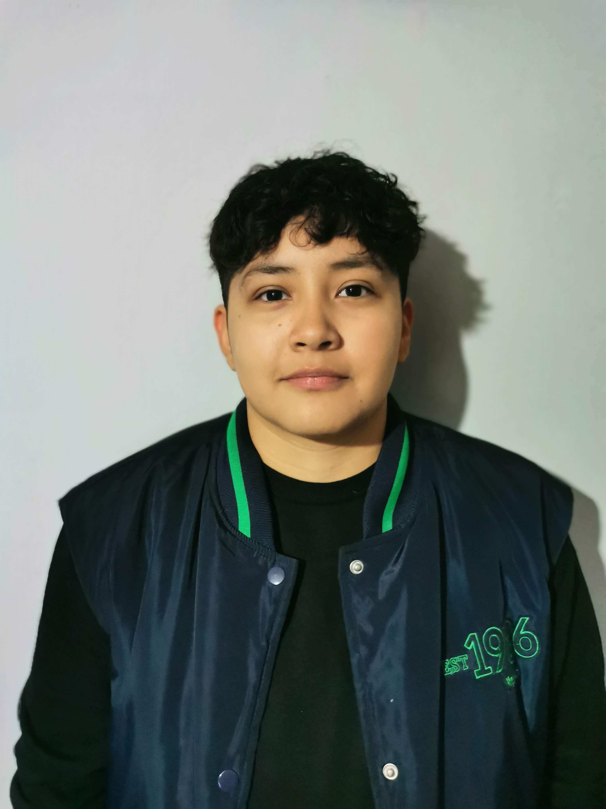

Carolina Zacarias Bernabe
Soy estudiante de la carrera de Diseño Gráfico en la Benemérita Universidad Autónoma de Puebla, apasionado por el área editorial e ilustración. Me considero una persona organizada, adaptable, proactiva, responsable y creativa, con una gran motivación para aprender y crecer tanto académica como profesionalmente. Disfruto trabajar en equipo y enfrentar nuevos retos que me permitan desarrollar mis habilidades y aportar soluciones innovadoras. Me interesa explorar el diseño desde una perspectiva funcional y estética, combinando técnica y creatividad para generar contenido visual impactante y de alta calidad.